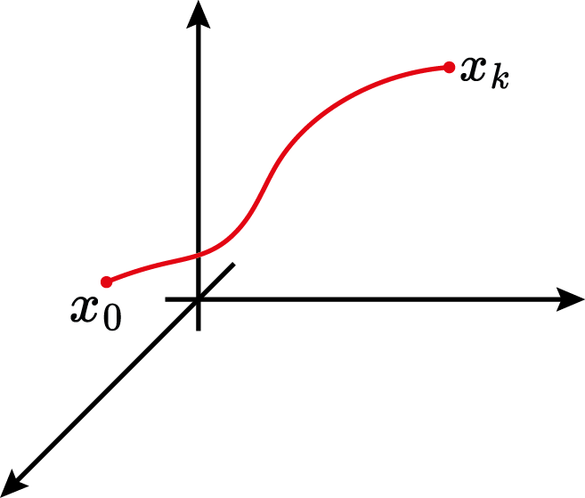
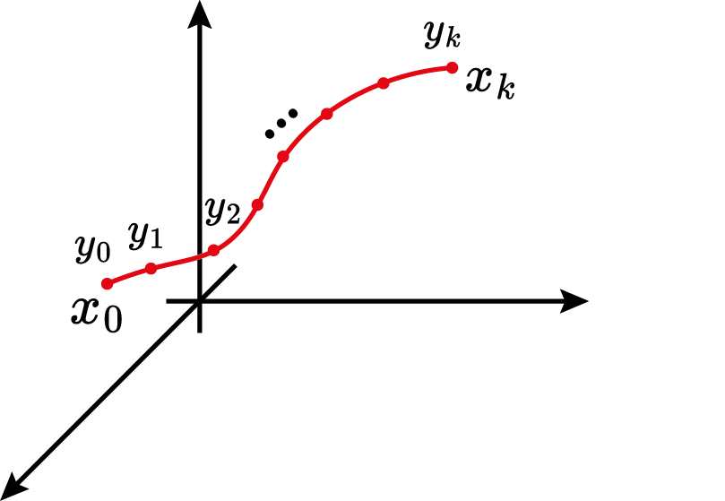
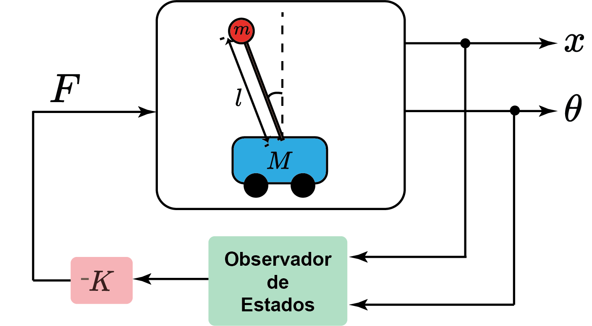
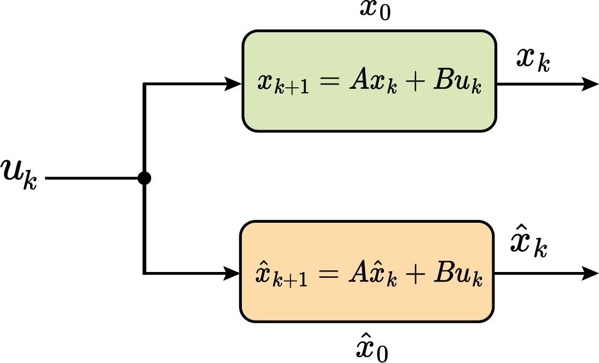
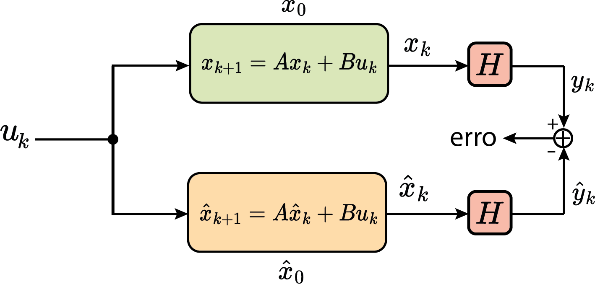
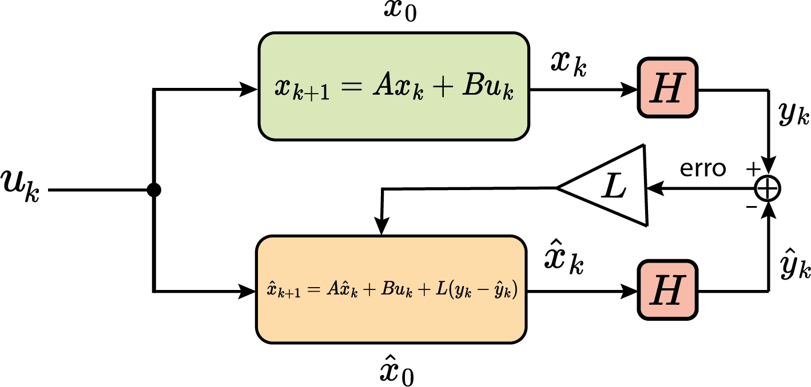
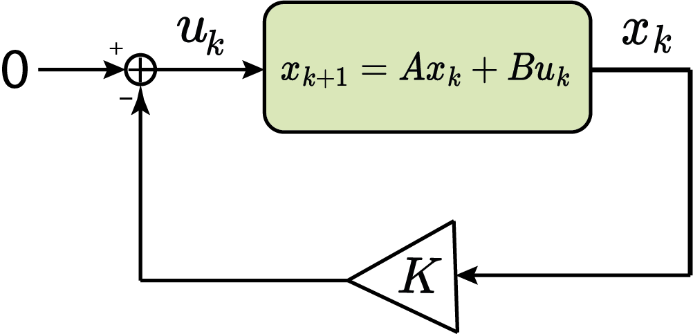
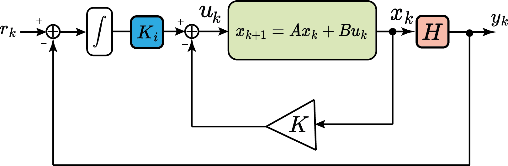
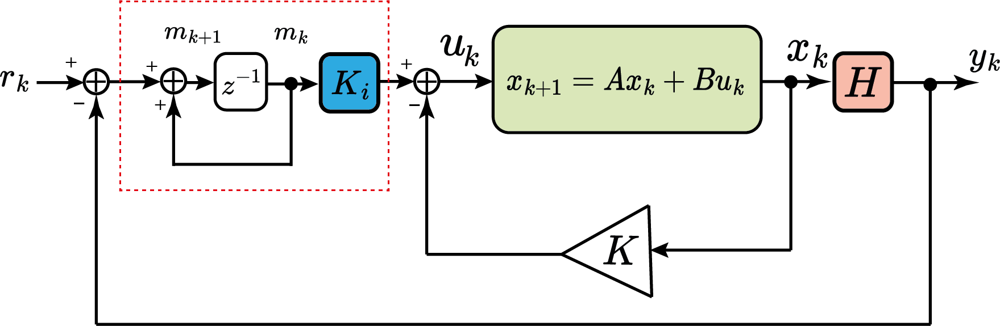

Aula 9:
Espaço de Estados - parte 2
Prof. Marcos Rogério Fernandes
31 de outubro de 2024
Objetivos
Os objetivos dessa aula são entender:
- Controlabilidade;
- Observabilidade;
- Realimentação de estados;
- Observadores de estado;
- Controle com rastreamento;
Modelo em espaço de estados em tempo discreto
$$ \begin{aligned} x_{k+1}&=A_dx_k+B_du_k\\ y_k&=Hx_k+Du_k \end{aligned} $$
Modelo em espaço de estados em tempo discreto
Solução da equação de estados em tempo discreto
$$ \begin{aligned} x_k=A_d^kx_0+\sum_{j=0}^{k-1}A_d^{k-j-1}B_d u_j, \quad k=1,2,3,\ldots \end{aligned} $$
Solução da equação de estados em tempo discreto
Saída: $$ \begin{aligned} y_k=HA_d^kx_0+H\sum_{j=0}^{k-1}A_d^{k-j-1}B_d u_j+Du_k, \\k=1,2,3,\ldots \end{aligned} $$
Controlabilidade
É possível levar o sistema para qualquer estado desejado em um tempo finito?
Controlabilidade
É possível levar o sistema para qualquer estado desejado em um tempo finito?
$$ \text{Existe uma sequência de ações de controle } u_0,u_1,\ldots,u_k \\ \text{ tal que: } \\x_k=A_d^kx_0+\sum_{j=0}^{k-1}A_d^{k-1-j}Bu_j $$Controlabilidade
Controlabilidade
Controlabilidade
$$ \begin{aligned} \begin{bmatrix} x_1-Ax_0\\ x_2-A^2x_0\\ x_3-A^3x_0\\ \vdots\\ x_k-A^kx_0 \end{bmatrix}=\begin{bmatrix} Bu_0\\ ABu_0+Bu_1\\ A^2Bu_0+ABu_1+Bu_2\\ \vdots \\ A^{k-1}Bu_0+\cdots+ABu_{k-2}+Bu_{k-1} \end{bmatrix} \end{aligned} $$
Controlabilidade
$$ \begin{aligned} \begin{bmatrix} x_1-Ax_0\\ x_2-A^2x_0\\ x_3-A^3x_0\\ \vdots\\ x_k-A^kx_0 \end{bmatrix}=\begin{bmatrix} B & 0 & 0 & \cdots & 0\\ AB & B & 0 & \cdots & 0\\ A^2B & AB & B & \cdots & 0\\ \vdots \\ A^{k-1}B& A^{k-2}B & A^{k-3}B & \cdots &B \end{bmatrix}\begin{bmatrix} u_0\\ u_1\\ u_2\\ \vdots \\ u_{k-1} \end{bmatrix} \end{aligned} $$
Controlabilidade
$$ \begin{aligned} x_k-A^kx_0 =\begin{bmatrix} A^{k-1}B& A^{k-2}B & A^{k-3}B & \cdots &B \end{bmatrix}\begin{bmatrix} u_0\\ u_1\\ u_2\\ \vdots \\ u_{k-1} \end{bmatrix} \end{aligned} $$
Controlabilidade
$$ \begin{aligned} x_k-A^kx_0 =\underbrace{\begin{bmatrix} A^{k-1}B& A^{k-2}B & A^{k-3}B & \cdots &B \end{bmatrix}}_{\mathcal{C}}\begin{bmatrix} u_0\\ u_1\\ u_2\\ \vdots \\ u_{k-1} \end{bmatrix} \end{aligned} $$
Controlabilidade
$$ \begin{aligned} x_k-A^kx_0 =\mathcal{C}\begin{bmatrix} u_0\\ u_1\\ u_2\\ \vdots \\ u_{k-1} \end{bmatrix} \end{aligned} $$
Controlabilidade
Controlabilidade
Controlabilidade Completa
Portanto, se $\text{rank}(\mathcal{C})=n$ então existe uma sequência $\{u_j\}_{j=0}^{k-1}$ que leva o sistema do estado $x_0$ até $x_k$.
Controlabilidade Completa
Se $u_k\in\mathbb{R}$ (single-input), então é suficiente que exista $u_0,u_1,\ldots,u_{n-1}$ ações de controle para levar o sistema para qualquer estado. Além do mais, se $\text{rank}(\mathcal{C})$=n, então existe $\mathcal{C}^{-1}$ e pode-se obter a sequência de ações de controle na forma
$$ \begin{aligned} \begin{bmatrix} u_0\\ u_1\\ u_2\\ \vdots \\ u_{n-1} \end{bmatrix}= \mathcal{C}^{-1}\Delta x \end{aligned} $$Observabilidade
É possível conhecer a condição inicial do sistema dado um conjunto finito de medidas da saída e o sinal de entrada?
Observabilidade
$$ \begin{aligned} y_0&=Hx_0+Du_0\\ y_1&=Hx_1+Du_1=HAx_0+HBu_0+Du_1\\ \vdots \\ y_k&=HA^kx_0+HA^{k-1}Bu_0+\cdots+HBu_{k-1}+Du_k \end{aligned} $$
Observabilidade
$$ \begin{aligned} y_0-Du_0&=Hx_0\\ y_1-HBu_0-Du_1&=HAx_0\\ \vdots \\ y_k-H\sum_{j=0}^{k-1}A^{k-1-j}Bu_j-Du_k&=HA^kx_0 \end{aligned} $$
Observabilidade
$$ \begin{aligned} \begin{bmatrix} y_0-Du_0\\ y_1-HBu_0-Du_1\\ \vdots\\ y_k-H\sum_{j=0}^{k-1}A^{k-1-j}Bu_j-Du_k \end{bmatrix} &= \begin{bmatrix} Hx_0\\ HAx_0\\ \vdots \\ HA^kx_0 \end{bmatrix} \end{aligned} $$
Observabilidade
$$ \begin{aligned} \begin{bmatrix} y_0-Du_0\\ y_1-HBu_0-Du_1\\ \vdots\\ y_k-H\sum_{j=0}^{k-1}A^{k-1-j}Bu_j-Du_k \end{bmatrix} &= \begin{bmatrix} H\\ HA\\ \vdots \\ HA^k \end{bmatrix}x_0 \end{aligned} $$
Observabilidade
$$ \begin{aligned} \begin{bmatrix} y_0-Du_0\\ y_1-HBu_0-Du_1\\ \vdots\\ y_k-H\sum_{j=0}^{k-1}A^{k-1-j}Bu_j-Du_k \end{bmatrix} &= \underbrace{\begin{bmatrix} H\\ HA\\ \vdots \\ HA^k \end{bmatrix}}_{\mathcal{O}}x_0 \end{aligned} $$
Observabilidade
$$ \begin{aligned} \begin{bmatrix} y_0-Du_0\\ y_1-HBu_0-Du_1\\ \vdots\\ y_k-H\sum_{j=0}^{k-1}A^{k-1-j}Bu_j-Du_k \end{bmatrix} &= \mathcal{O}x_0 \end{aligned} $$
Observabilidade
Observabilidade
Observabilidade Completa
Portanto, se $\text{rank}(\mathcal{O})=n$ então é possível reconstruir $x_0$ através das medições $\{y_j\}_{j=0}^{k}$ e $\{u_j\}_{j=0}^{k}$.
Observabilidade Completa
Se $y_k\in\mathbb{R}$ (single-output), então é suficiente um conjunto $y_0,y_1,\ldots,y_{n-1}$ medições para reconstruir $x_0$. Além do mais, se $\text{rank}(\mathcal{O})=n$, então existe $\mathcal{O}^{-1}$ e pode-se obter $x_0$ na forma
$$ \begin{aligned} x_0= \mathcal{O}^{-1}\Delta y \end{aligned} $$
Projeto de Controladores em Espaço de Estados
Controle via Realimentação de Estados

$$ u_k=-Kx_k $$
Exemplo: Pêndulo Invertido
Exemplo: Pêndulo Invertido
Realimentação de Estados
Realimentação de Estados
Controle via Realimentação de Estados
$$ x_{k+1}=Ax_k+Bu_k=Ax_k-BKx_k $$
Portanto, a dinâmica em malha-fechada é$$ x_{k+1}=(A-BK)x_k $$
Assintoticamente estável se $$ |\lambda\{A-BK\}| < 1 $$Equação Característica
$$ x_{k+1}=Ax_k+Bu_k $$
$$ \Delta(A)=\det(\lambda I-A) $$
As raízes do polinômio $\Delta(A)$ são os autovalores de $A$: $$ \lambda\{A\}=\{\lambda_i: \det(\lambda_iI-A)=0,i=1,\ldots,n\} $$Equação Característica
$$ x_{k+1}=Ax_k+Bu_k $$
$$ \Delta(A)=\det(\lambda I-A) $$
Para sistemas controláveis os autovalores são iguais aos pólos da função de transferência!Projeto por Alocação de Pólos
$$ x_{k+1}=Ax_k+Bu_k\\ u_k=-Kx_k $$
$$ \Delta_d(A-BK)=(z-p_1)(z-p_2)\cdots(z-p_n) $$
em que $p_1,p_2,\ldots,p_n$ são os pólos desejados em malha fechada!Projeto por Alocação de Pólos
$$ x_{k+1}=Ax_k+Bu_k\\ u_k=-Kx_k $$
$$ \Delta_d(A-BK)=z^n+\beta_1z^{n-1}+\cdots+\beta_{n-1}z+\beta_n $$
em que $p_1,p_2,\ldots,p_n$ são os pólos desejados em malha fechada!Forma Canônica Controlável
Função de transferência (SISO): $$ \frac{Y(z)}{U(z)}=\frac{z^m+b_1z^{m-1}+\cdots+b_{m-1}z+b_m}{z^n+a_1z^{n-1}+\cdots+a_{n-1}z+a_n}, m\le n $$
Se não ocorrer cancelamentos de zeros com pólos, então o sistema é controlável!
Forma Canônica Controlável
$$ x_{k+1}=\begin{bmatrix} 0 & 1 & 0 & \cdots & 0\\ 0 & 0 & 1 & \cdots & 0\\ \vdots & \vdots & \vdots & \ddots & \vdots \\ 0 & 0 & 0 & \cdots & 1\\ -a_n & -a_{n-1} & -a_{n-2} & \cdots & -a_1 \end{bmatrix}x_k+\begin{bmatrix} 0\\ 0\\ \vdots\\ 0\\ 1 \end{bmatrix}u_k $$
Forma Canônica Controlável
Dado as matrizes $A$ e $B$ na forma Canônica Controlável, tem-se $$ \det(\lambda I - (A-BK))=z^{n}+\beta_1z^{n-1}+\cdots+\beta_{n-1}z+\beta_n $$
o que resulta em$$ K=\begin{bmatrix} (\beta_n-a_n) & (\beta_{n-1}-a_{n-1}) & \cdots & (\beta_1-a_1) \end{bmatrix} $$
Equação de Ackermann (SISO)
$$ K=\begin{bmatrix} 0 & \cdots & 1 \end{bmatrix}\mathcal{C}^{-1}\gamma(A) $$
obs: $\gamma(A)=A^{n}+\beta_1A^{n-1}+\cdots+\beta_{n-1}A+\beta_n I$Exemplo:
Observadores de Estado:
Observadores de Estado:

Observadores de Estado:

Observadores de Estado:

Observadores de Estado:

Modelo em espaço de estados
Sistema: $$ \begin{aligned} x_{k+1}&=A_dx_k+B_du_k\\ y_k&=Hx_k+Du_k \end{aligned} $$
Observador $$ \begin{aligned} \hat{x}_{k+1}&=A_d\hat{x}_k+B_du_k+L(y_k-\hat{y}_k)\\ \hat{y}_k&=H\hat{x}_k+Du_k \end{aligned} $$
Dinâmica do Erro de Estado
$$ \begin{aligned} \varepsilon_{k+1}&=x_{k+1}-\hat{x}_{k+1}\\ &=Ax_k+Bu_k-(A\hat{x}_k+Bu_k)+L(y_k-\hat{y}_k)\\ &=A\varepsilon_{k}+L(Hx_k+Du_k-(H\hat{x}_k+Du_k))\\ &=(A-LH)\varepsilon_k \end{aligned} $$
Portanto,$$ \varepsilon_{k+1}=(A-LH)\varepsilon_k $$
Dinâmica do Erro de Estado
$$ |\lambda\{A-LH\}| < 1 $$
então o observador converge para o estado verdadeiro!
Boa prática de projeto: a dinâmica do erro de estado do observador ser pelo menos 2x mais rápido que a dinâmica do sistema!
Equação de Ackermann (SISO)
$$ L=\gamma(A)\mathcal{O}^{-1}\begin{bmatrix} 0 & 0 & \cdots & 1 \end{bmatrix}^\trp $$
obs: $\gamma(A)=A^{n}+\beta_1A^{n-1}+\cdots+\beta_{n-1}A+\beta_n I$Exemplo de observador de estados
Rastreamento vs Regulação
Regulação
Rastreamento vs Regulação
Rastreamento vs Regulação
Rastreamento
Rastreamento vs Regulação
Rastreamento
Rastreamento
Sistema: $$ \begin{aligned} x_{k+1}&=A_dx_k+B_du_k\\ y_k&=Hx_k+Du_k \end{aligned} $$
Integrador $$ \begin{aligned} m_{k+1}&=m_k+(r_k-y_k)\\ \end{aligned} $$
Rastreamento
Sistema: $$ \begin{aligned} x_{k+1}&=A_dx_k+B_du_k\\ y_k&=Hx_k+Du_k \end{aligned} $$
Lei de controle: $$ \begin{aligned} u_k=-Kx_k+K_im_k \end{aligned} $$
Rastreamento
Sistema: $$ \begin{aligned} x_{k+1}&=(A_d-B_dK)x_k+B_dK_im_k\\ m_{k+1}&=m_k+r_k-y_k\\ y_k&=Hx_k+Du_k \end{aligned} $$
Por simplicidade, suponha $D=0$.Rastreamento
Sistema Aumentado: $$ \begin{aligned} \begin{bmatrix} x_{k+1}\\ m_{k+1} \end{bmatrix} &=\begin{bmatrix} A_d-B_dK & B_dK_i \\ -H & I \end{bmatrix}\begin{bmatrix} x_{k}\\ m_{k} \end{bmatrix}+\begin{bmatrix} 0\\ I \end{bmatrix} r_k \end{aligned} $$
Rastreamento
Sistema Aumentado: $$ \begin{aligned} \begin{bmatrix} x_{k+1}\\ m_{k+1} \end{bmatrix} &=\Bigl(\begin{bmatrix} A_d & 0 \\ -H & I \end{bmatrix}-\begin{bmatrix} B_d \\ 0 \end{bmatrix}\begin{bmatrix} K & -K_i \end{bmatrix}\Bigr)\begin{bmatrix} x_{k}\\ m_{k} \end{bmatrix}+\begin{bmatrix} 0\\ I \end{bmatrix} r_k \end{aligned} $$
Rastreamento
Sistema Aumentado: $$ \begin{aligned} \begin{bmatrix} x_{k+1}\\ m_{k+1} \end{bmatrix} &=\Bigl(\underbrace{\begin{bmatrix} A_d & 0 \\ -H & I \end{bmatrix}}_{\mathcal{A}}-\underbrace{\begin{bmatrix} B_d \\ 0 \end{bmatrix}}_{\mathcal{B}}\underbrace{\begin{bmatrix} K & -K_i \end{bmatrix}}_{\mathcal{K}}\Bigr)\begin{bmatrix} x_{k}\\ m_{k} \end{bmatrix}+\begin{bmatrix} 0\\ I \end{bmatrix} r_k \end{aligned} $$
Rastreamento
Sistema Aumentado: $$ \begin{aligned} \begin{bmatrix} x_{k+1}\\ m_{k+1} \end{bmatrix} &=\Bigl(\mathcal{A}-\mathcal{B}\mathcal{K}\Bigr)\begin{bmatrix} x_{k}\\ m_{k} \end{bmatrix}+\begin{bmatrix} 0\\ I \end{bmatrix} r_k \end{aligned} $$
Basta determinar o ganho $\mathcal{K}$ que torne o sistema aumentado estável! $$ |\lambda\{\mathcal{A}-\mathcal{B}\mathcal{K}\}|<1 $$Rastreamento
Condição para rastreamento do sistema: $$ \begin{aligned} \begin{bmatrix} I-A_d & -B_d \\ H & 0 \end{bmatrix} \end{aligned} $$ precisa ter rank completo.
Consequências:- Sistema original precisa ser controlável;
- Não pode possuir zeros em $z=1$;
- Matriz $H$ precisa ter rank completo de linhas;
Rastreamento
Rastreamento
Próxima aula teórica
Controle LQR
$$ J=\sum_{k=1}^\infty x_k^\trp Q x_k +u_k^\trp R u_k $$